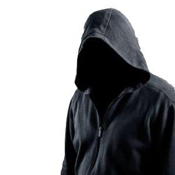

CHI SONO
Ciao, mi chiamo Giuseppe Marinelli ma mi chiamo anche Ombra Oskura, sono un ragazzo di 16 anni nato le 12/12/2005 a Bari e abito in un paesino di nome Sammichele di Bari.
Faccio il 3 anno di scuola superiore e sto imparando a creare siti e a programare con i linguaggi di programmazione.

powered by: Giuseppe Marinelli
section: 3b inf
e-mail: ombraoskura.github.io